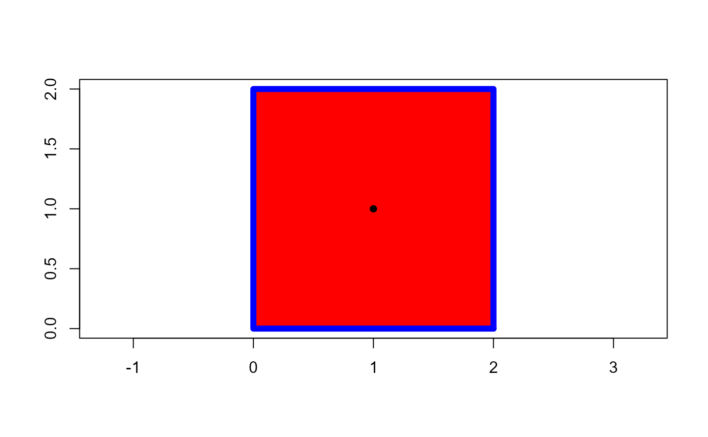
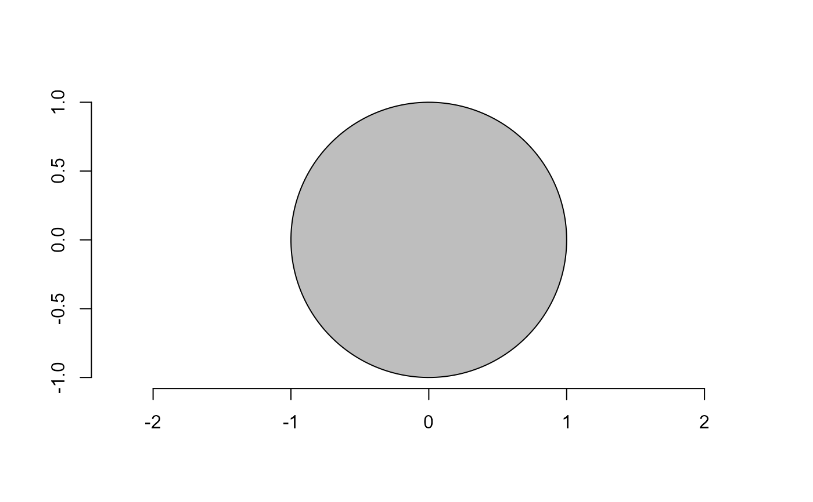
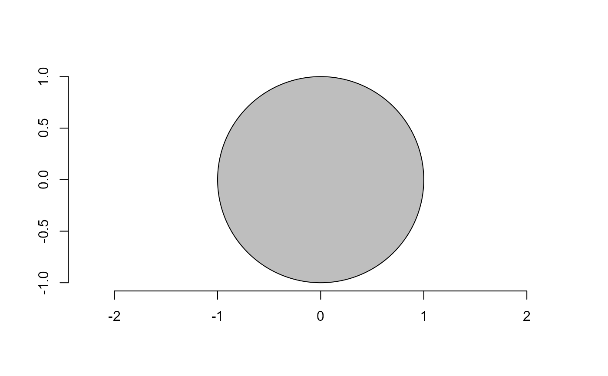

Several useful functions to analyze polygons. All of them are based on a set of coordinate points describing the edge of the object(s).
Area measures
conv_hull()Computes convex hull of a set of points.poly_area()Computes the area of a polygon given by the vertices in the vectorsxandyusing the Shoelace formula, as follows (Lee and Lim, 2017). $$A=\frac{1}{2}\left|\sum_{i=1}^{n}\left(x_{i} y_{i+1}-x_{i+1} y_{i}\right)\right|$$, wherexandyare the coordinates which form the corners of a polygon, andnis the number of coordinates.poly_lw()Returns the length and width of a polygon based on their alignment to the x-axis. The length is defined as the range along the x-axis and the width as the range on the y-axis.poly_mass()Computes the center of mass of a polygon given by the vertices in the vectorsxandy.poly_solidity()Computes the solidity of a shape as the ratio of the shape area and the convex hull area.
Perimeter measures
poly_slide()Slides the coordinates of a polygon given by the vertices in the vectorsxandyso that the id-th point become the first one.poly_distpts()Computes the euclidean distance between every points of a polygon given by the vertices in the vectorsxandy.poly_centdist()Computes the euclidean distance between every point of the perimeter and the centroid of the object.poly_perimeter()Computes the perimeter of a polygon given by the vertices in the vectorsxandy.poly_caliper()Computes the caliper (Also called the Feret's diameter) of a polygon given by the vertices in the vectorsxandy.
Circularity measures (Montero et al. 2009).
poly_circularity()computes the circularity (C), also called shape compactness, or roundness measure of an object. It is given byC = P^2 / A, wherePis the perimeter andAis the area of the object.poly_circularity_norm()computes the normalized circularity (Cn), to be unity for a circle. This measure is invariant under translation, rotation, scaling transformations, and dimensionless. It is given by:Cn = P^2 / 4*pi*A.poly_circularity_haralick()computes the Haralick's circularity (CH). The method is based on the computation of all the Euclidean distances from the object centroid to each boundary pixel. With this set of distances, the media (m) and the standard deviation (sd) are computed. These statistical parameters are used on a ratio that calculates the circularity, CH, of a shape, asCH = m/sdpoly_convexity()Computes the convexity of a shape using a ratio between the perimeter of the convex hull and the perimeter of the polygon.poly_eccentricity()Computes the eccentricity of a shape using the ratio of the eigen values (inertia axes of coordinates).poly_elongation()Computes the elongation of a shape as1 - width / length.
Utilities for polygons
poly_check()Checks a set of coordinate points and return a matrix withxandycolumns.poly_is_closed()Returns a logical value indicating if a polygon is closed.poly_close(), andpoly_unclose()close and unclose a polygon, respectively.poly_rotate()Rotates the polygon coordinates by aangle(0-360 degrees) in the trigonometric direction (anti-clockwise).poly_flip_x(),poly_flip_y()flips shapes along the x and y axis, respectively.poly_align()Aligns the coordinates along their longer axis using var-cov matrix and eigen values.poly_sample()Samplesncoordinates among existing points. Defaults to50poly_sample_prop()Samples a proportion of coordinates among existing points. Defaults to0.1poly_spline()Interpolates a polygon contour.poly_smooth()Smooths a polygon contour by combining samplingpropcoordinate points and them interpoling them usingverticesvertices.poly_jitter()Add a small amount of noise to a set of point coordinates. Seebase::jitter()for more details.
poly_measures()Is a wrapper around thepoly_*()functions.
Usage
poly_check(x, y = NULL)
poly_is_closed(x, y = NULL)
poly_close(x, y = NULL)
poly_unclose(x, y = NULL)
poly_limits(x, y = NULL)
conv_hull(x, y = NULL)
poly_area(x, y = NULL)
poly_slide(x, y = NULL, fp = 1)
poly_distpts(x, y = NULL)
poly_centdist(x, y = NULL)
poly_perimeter(x, y = NULL)
poly_rotate(x, y = NULL, angle = 0, plot = TRUE)
poly_align(x, y = NULL, plot = TRUE)
poly_lw(x, y = NULL)
poly_eccentricity(x, y = NULL)
poly_convexity(x, y = NULL)
poly_caliper(x, y = NULL)
poly_elongation(x, y = NULL)
poly_solidity(x, y = NULL)
poly_flip_y(x, y = NULL)
poly_flip_x(x, y = NULL)
poly_sample(x, y = NULL, n = 50)
poly_sample_prop(x, y = NULL, prop = 0.1)
poly_jitter(x, y = NULL, noise_x = 1, noise_y = 1, plot = TRUE)
poly_circularity(x, y = NULL)
poly_circularity_haralick(x, y = NULL)
poly_circularity_norm(x, y = NULL)
poly_measures(x, y = NULL)
poly_mass(x, y = NULL)
poly_spline(x, y = NULL, vertices = 100, k = 2, ...)
poly_smooth(x, y = NULL, prop = 0.1, vertices = 1000, plot = TRUE, ...)Arguments
- x, y
Coordinate vectors of points. This can be specified as two vectors (
xandy), or a 2-column matrixx. Ifxis a list of vector coordinates the function will be applied to each element usingbase::lapply().- fp
The id of the point that will become the new first point. Defaults to
1.- angle
The angle (0-360) to rotate the object.
- plot
Plots the object? Defaults to
TRUE- n, prop
The number and proportion of coordinates to sample, respectively when using
poly_sample*().- noise_x, noise_y
A numeric factor to define the noise added to
xandyaxis, respectively. Seebase::jitter()for more details.- vertices
The number of spline vertices to create.
- k
The number of points to wrap around the ends to obtain a smooth periodic spline.
Value
conv_hull()andpoly_spline()returns a matrix withxandycoordinates for the convex hull/smooth line in clockwise order. Ifxis a list, a list of points is returned.poly_area()returns adouble, or a numeric vector ifxis a list of vector points.poly_mass()returns adata.framecontaining the coordinates for the center of mass, as well as for the maximum and minimum distance from contour to the center of mass.poly_slides(),poly_distpts(),poly_spline(),poly_close(),poly_unclose(),poly_rotate(),poly_jitter(),poly_sample(),poly_sample_prop(), andpoly_measuresreturns adata.frame.poly_perimeter(),poly_lw(),poly_eccentricity(),poly_convexity(),poly_caliper(),poly_elongation(),poly_circularity_norm(),poly_circularity_haralick()returns adouble.
References
Lee, Y., & Lim, W. (2017). Shoelace Formula: Connecting the Area of a Polygon and the Vector Cross Product. The Mathematics Teacher, 110(8), 631–636. doi: 10.5951/mathteacher.110.8.0631
Montero, R. S., Bribiesca, E., Santiago, R., & Bribiesca, E. (2009). State of the Art of Compactness and Circularity Measures. International Mathematical Forum, 4(27), 1305–1335.
Chen, C.H., and P.S.P. Wang. 2005. Handbook of Pattern Recognition and Computer Vision. 3rd ed. World Scientific.
Examples
# \donttest{
library(pliman)
# A 2 x 2 square
df <- draw_square(side = 2)
# square area
poly_area(df)
#> [1] 4
# polygon perimeter
poly_perimeter(df)
#> [1] 8
# center of mass of the square
cm <- poly_mass(df)
plot_mass(cm)
# The convex hull will be the vertices of the square
(conv_square <- conv_hull(df) |> poly_close())
#> x y
#> 1 2 0
#> 2 0 0
#> 3 0 2
#> 4 2 2
#> 5 2 0
plot_contour(conv_square,
col = "blue",
lwd = 6)

poly_area(conv_square)
#> [1] 4
################### Example with a polygon ##################
x <- c(0, 1, 2, 3, 5, 2, -1, 0, 0)
y <- c(5, 6.5, 7, 3, 1, 1, 0, 2, 5)
df_poly <- data.frame(x = x, y = y)
# area of the polygon
plot_polygon(df_poly, fill = "red")
poly_area(df_poly)
#> [1] 18
# perimeter of the polygon
poly_perimeter(df_poly)
#> [1] 21.27069
# center of mass of polygon
# arrows from center of mass to maximum and minimum radius
cm <- poly_mass(df_poly)
plot_mass(cm, arrow = TRUE, col = "blue")
# vertices of the convex hull
(conv_poly <- conv_hull(df_poly))
#> x y
#> 5 5 1.0
#> 7 -1 0.0
#> 9 0 5.0
#> 2 1 6.5
#> 3 2 7.0
# area of the convex hull
poly_area(conv_poly)
#> [1] 24
plot_polygon(conv_poly,
fill = "red",
alpha = 0.2,
add = TRUE)
 ############ example of circularity measures ################
tri <- draw_circle(n = 200, plot = FALSE)
plot_polygon(tri, aspect_ratio = 1)

poly_circularity_norm(tri)
#> [1] 1.000083
set.seed(1)
tri2 <-
draw_circle(n = 200, plot = FALSE) |>
poly_jitter(noise_x = 100, noise_y = 100, plot = FALSE)
plot_polygon(tri2, aspect_ratio = 1)
############ example of circularity measures ################
tri <- draw_circle(n = 200, plot = FALSE)
plot_polygon(tri, aspect_ratio = 1)

poly_circularity_norm(tri)
#> [1] 1.000083
set.seed(1)
tri2 <-
draw_circle(n = 200, plot = FALSE) |>
poly_jitter(noise_x = 100, noise_y = 100, plot = FALSE)
plot_polygon(tri2, aspect_ratio = 1)
 poly_circularity_norm(tri2)
#> [1] 1.267712
# }
poly_circularity_norm(tri2)
#> [1] 1.267712
# }